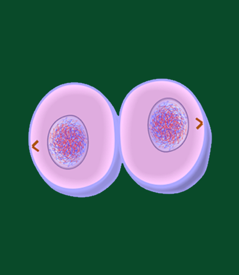

Cytokinesis, the final stage of the cell division process, is the moment when a single parent cell
physically divides into two distinct daughter cells. This pivotal event follows the successful
completion of mitosis (or meiosis) and overlaps with the latter stages of telophase. While mitosis
ensures the accurate separation of genetic material, cytokinesis focuses on the division of the cellular
contents, including organelles and cytoplasm, to establish two separate and functional daughter cells.
In animal cells, cytokinesis is primarily characterized by the formation of a contractile ring composed
of actin and myosin filaments. This ring assembles just beneath the cell membrane and contracts,
gradually pinching the cell into two distinct halves. This process, known as cleavage, results in the
physical separation of the cytoplasmic contents and the creation of two genetically identical daughter
cells. In contrast, plant cells undergo a slightly different cytokinetic process. Instead of a
contractile ring, plant cells form a cell plate at the center of the cell, composed of vesicles
containing cell wall materials. As the cell plate enlarges, it fuses with the cell membrane, creating a
new cell wall that divides the cell into two.
Cytokinesis ensures the faithful distribution of cellular components and genetic material, guaranteeing
that each daughter cell receives a complete and functional set of organelles and chromosomes. The
successful execution of cytokinesis is essential for maintaining proper cellular function, supporting
growth, and facilitating the regeneration of tissues in multicellular organisms.
